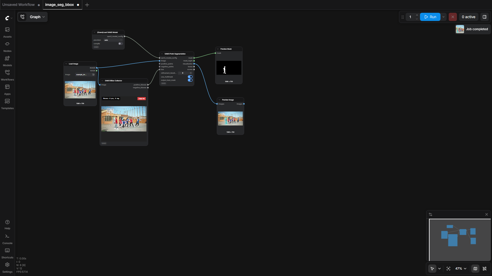
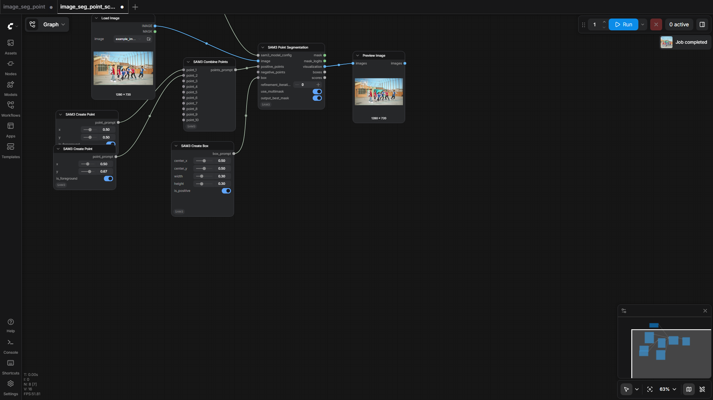
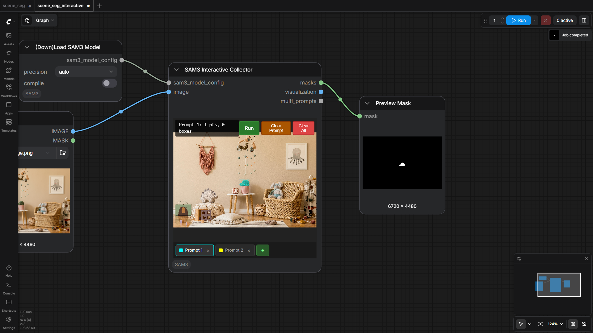

100.0%
6 passed
6/6 tests
Workflows

image_seg_bbox
pass

image_seg_point
pass

image_seg_point_scriptable
pass

image_seg_text
pass

scene_seg
pass

scene_seg_interactive
pass
Downloaded Models
9 files · 3.2 GBmodels/sam3/
sam3.safetensors3.2 GB
models/vae_approx/
taef1_encoder.safetensors2.4 MB
taesd3_encoder.safetensors2.4 MB
taef1_decoder.safetensors2.4 MB
taesd3_decoder.safetensors2.4 MB
taesdxl_decoder.safetensors2.3 MB
taesd_decoder.safetensors2.3 MB
taesdxl_encoder.safetensors2.3 MB
taesd_encoder.safetensors2.3 MB